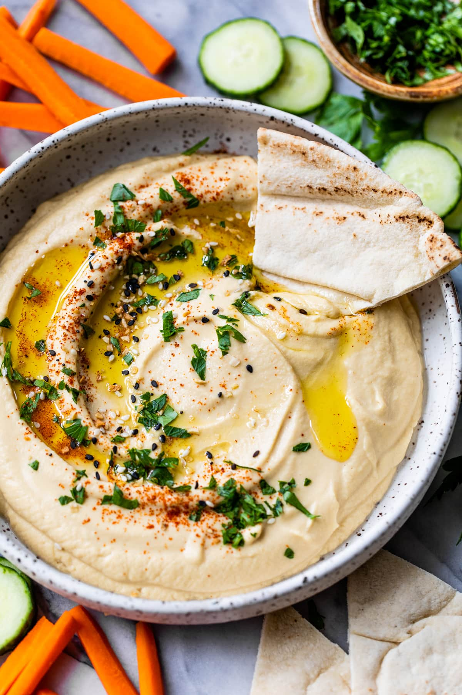

Hummus

It's the most amazing hummus in the universe. That's right, the entire universe.
This is a really good hummus that you should definitely make.
If you're eating any other kind of hummus you're ruining your own life. You monster.
Ingredients
- 1 (15 ounce) can of garbanzo beans, drained, liquid reserved
- 1 tablespoon lemon juice
- 1 tablespoon olive oil
- 2 cloves garlic, crushed
- 0.5 teaspoon ground cumin
- 0.5 teaspoon salt, or to taste
- 2 drops sesame oil, or to taste (Optional)
Instructions
- Gather all your ingredients.
- Blend garbanzo beans, lemon juice, olive oil, garlic, cumin, salt, and sesame oil in a food processor.
- Stream reserved bean liquid into the mixture as it blends until desired consistency is achieved.
- Serve with pita chips or veggies.